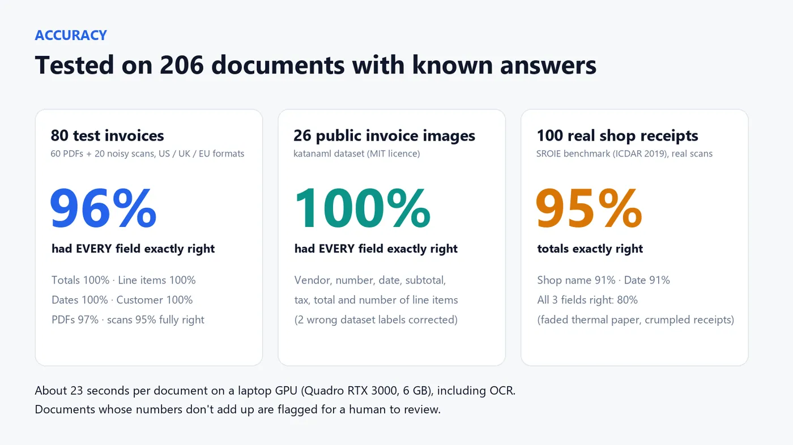
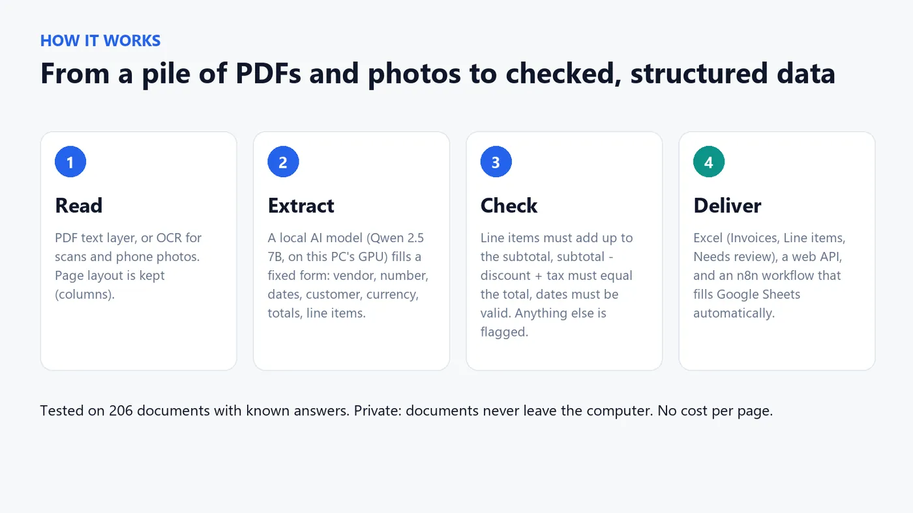
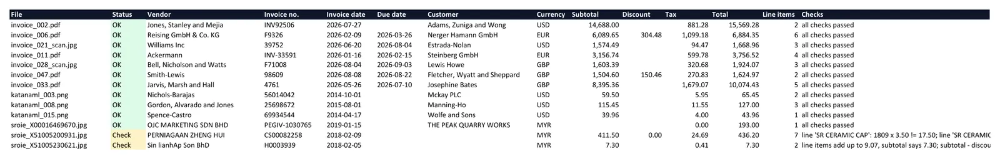
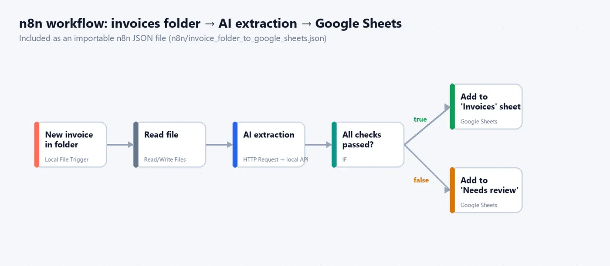
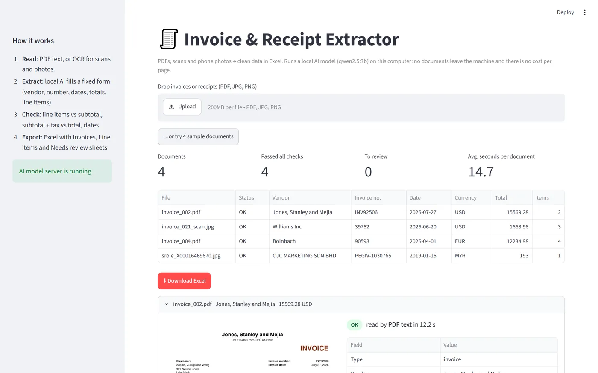

AI document extraction
AI invoice and receipt extraction: from scans and photos to checked Excel
Invoices and receipts (PDFs, scans and phone photos) turned into clean, checked Excel data by a local AI model. No cost per page, and documents never leave the computer.
of 80 test invoices with every field right
on 26 public invoice images
documents tested with known answers

The problem
Typing invoices into Excel is slow and full of small mistakes. Cloud OCR services charge per page and send private financial documents to someone else's servers.
The goal: drop in PDFs, scans or phone photos and get clean, checked data, with anything doubtful flagged for a human.
What I built
- Read any document: the PDF text layer when there is one, otherwise OCR (RapidOCR) for scans and photos. The page layout is rebuilt line by line and tilted scans are straightened, so prices stay on the right row.
- Extract with a local AI model: Qwen 2.5 7B in Ollama fills a fixed schema: vendor, number, dates, customer, currency, subtotal, discount, tax, total and every line item.
- Rules for what AI should not guess: dates are read in code in the document's own format, currency symbols become ISO codes, and key fields have layout-based backups.
- Math checks: line items vs subtotal, subtotal minus discount plus tax vs total, valid dates. Anything that does not add up goes to a Needs review sheet.
- Delivered three ways: an Excel file (Invoices, Line items, Needs review), a web API, and an n8n workflow for automation.
The result
Tested on 206 documents where the right answers are known:
| Test set | Documents | Result |
|---|---|---|
| Test invoices: PDFs plus noisy, tilted scans (US, UK, EU formats) | 80 | every field right on 96%; totals, dates, customer and all line items 100% |
| Public invoice images (katanaml dataset) | 26 | every field right on 100% |
| Real scanned shop receipts (ICDAR 2019 SROIE) | 100 | total 95%, shop name 91%, date 91% |
About 20 seconds per document on a laptop GPU, OCR included, with no cost per page.
Screens




